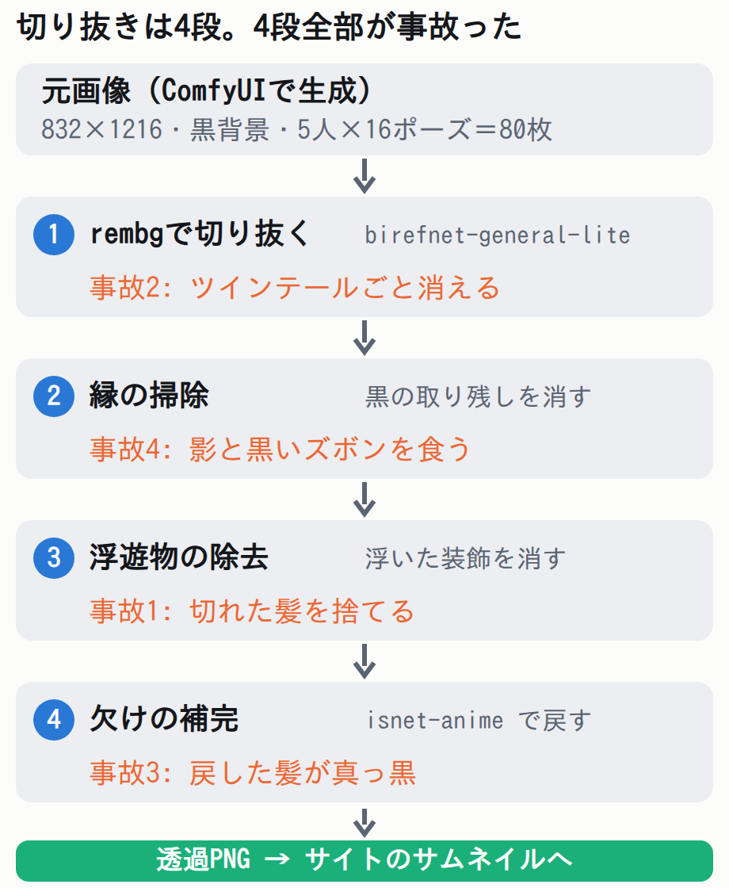

作ったもの: 5人×16ポーズ=80枚。黒背景で生成して、透過PNGにする
このサイトのサムネイルにはキャラの立ち絵が載っています。その画像はフォルダから読むだけなので、画像を置き換えれば全記事のサムネイルが替わります。
今回はその素材を一新しました。ComfyUIで5人×16ポーズ=80枚（832×1216・黒背景）を生成し、背景除去モデルrembgで透過PNGに切り抜きます。
生成はGPUのある手元のPC。切り抜きから公開までは、GPUなしの環境で全部回りました。

この記事は「うまくいった手順」ではなく、途中で起きた事故と、その原因を画素単位で特定した記録です。同じ作業をする人が同じ穴に落ちないために書いています。